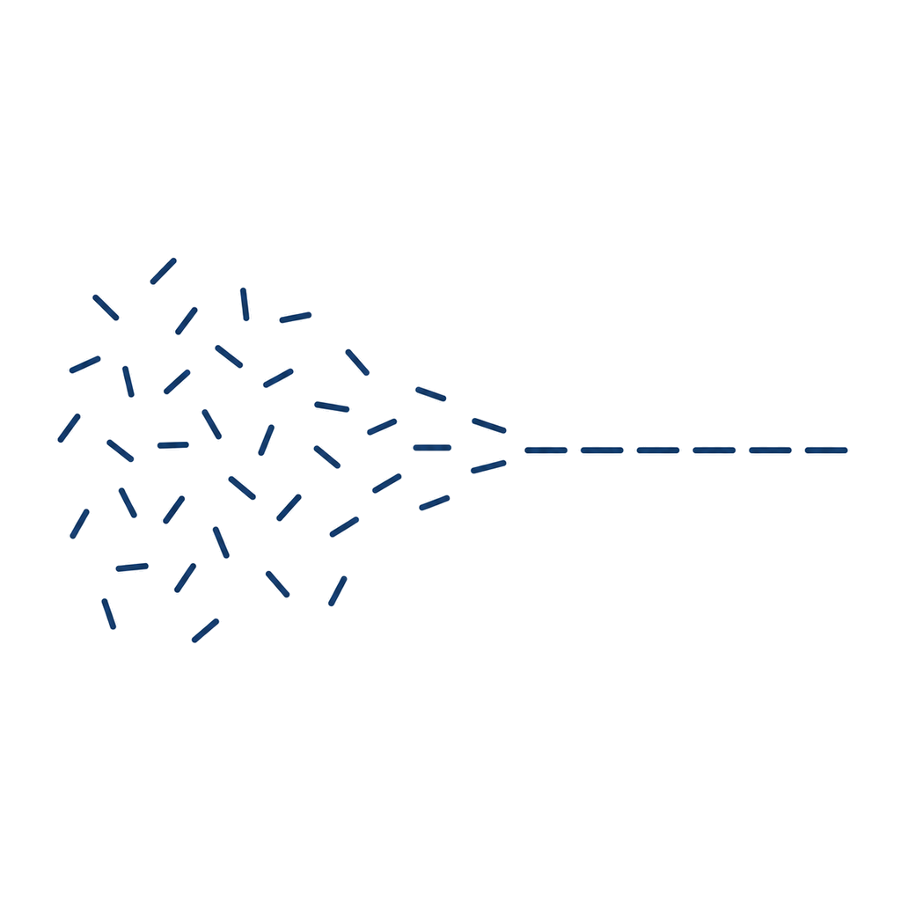
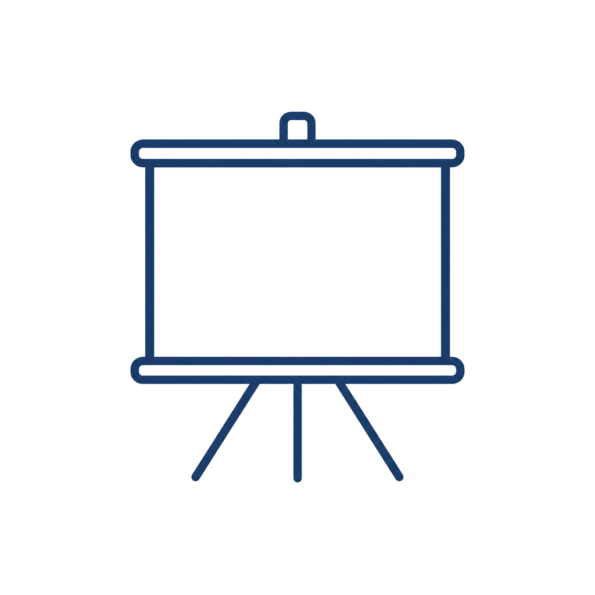
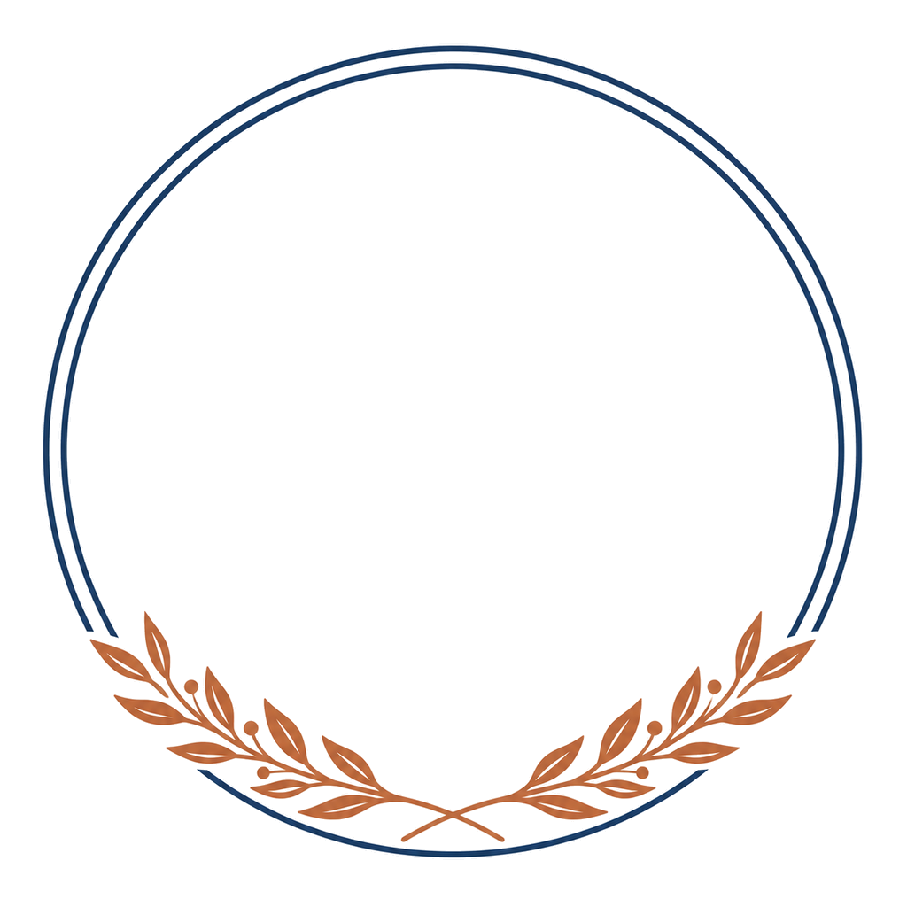
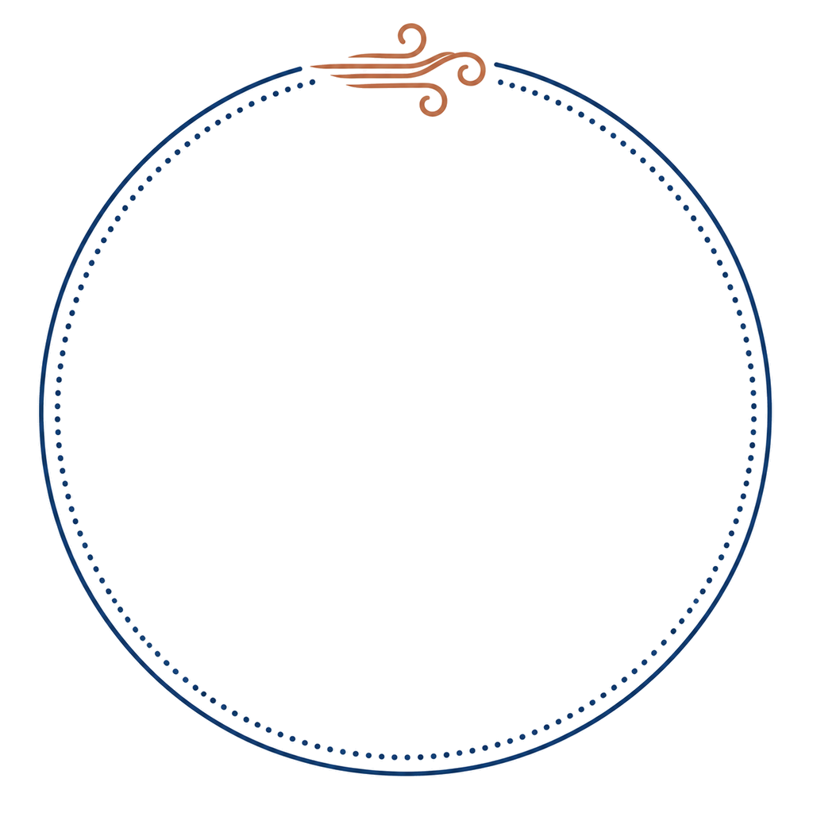
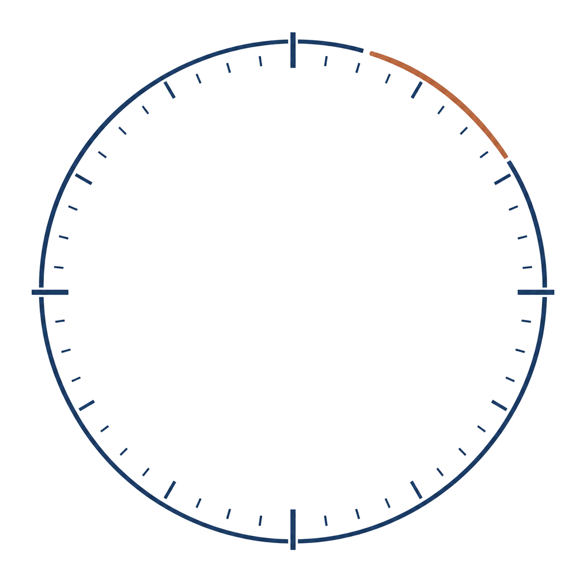
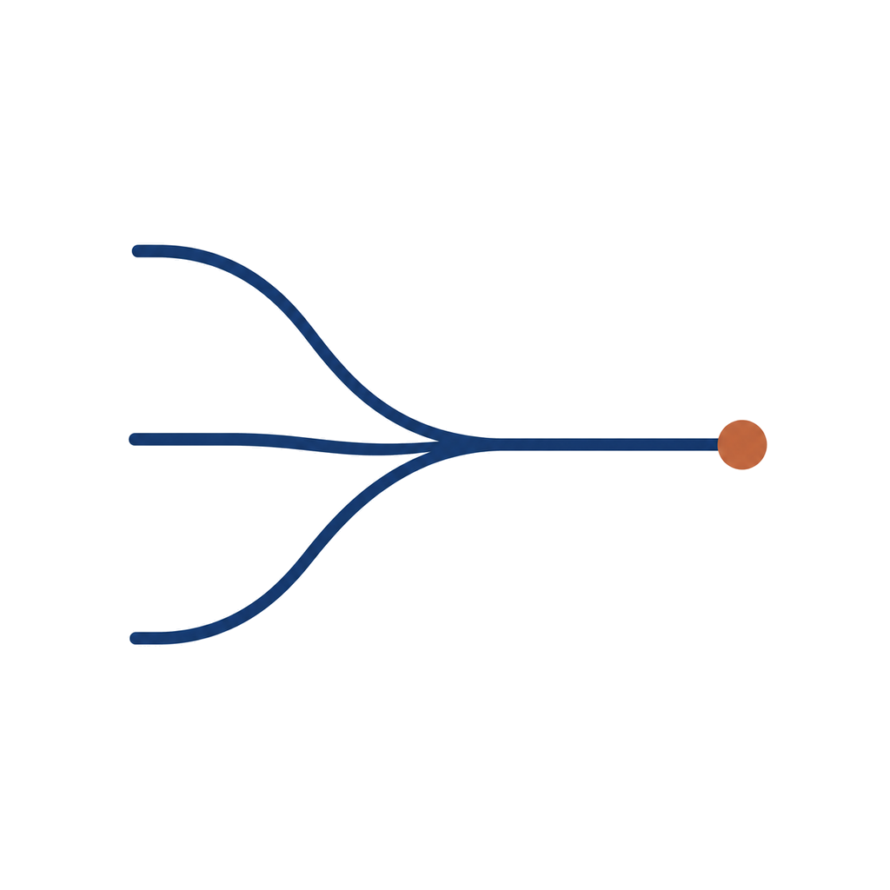

写真はイメージです
調べものには使っている
毎晩の作業は前のまま
22:40LINEで来た予約を、手で予約表に写す。ChatGPTに頼めそうな気はするけれど、どう頼めばいいか分からない。
23:15セミナーで見た使い方を試してみる。でも自分の仕事に置き換えると、どこで使うのかが浮かばない。
23:47患者さんの名前、AIに入れて大丈夫だったかな。結局、今日も手でやって終わる。
それは使い方を知らないからではありません。自分の業務のどこにAIを入れるかが、まだ決まっていないだけです。では、何から決めればいいのか。答えは、毎晩いちばん時間を取られている作業1つです。
法人向けの大きなコンサルは大げさ、という方の業務1つからお受けしています
教える 書く 作る
一人でやり切ります
研修だけで終わらない。制作だけでも終わらない。3つを一人で持っているから、あなたの業務で回るところまで付き合えます。
「使える状態」までやり切る
5,000人在籍のAIスクールで、800人以上の学習をサポートしてきました。ツールの紹介で終わらせず、あなたの業務で回るところまで付き合います。
業務1つから始める
いきなり全部をAIに置き換えません。いちばん時間を取られている作業を1つ選び、そこから形にします。「この作業なら使える」と実感できると、そのあとは自然に広がります。

教える×書ける×作れる
講師として伝える力、ライター4年の言語化、制作と開発の手。研修のあとに要るマニュアルや仕組みも、自分で作ってお渡しします。

現場の実例にもとづく提案
接骨院・税理士事務所・小売の方への支援や研修で試した例を、note で公開しています。机の上の話ではなく、再現できるやり方を提案します。
あなたの業務に合わせて
4つの形で支援します
「いくらかかるのか分からないから頼みにくい」。そう言われないように、内容と費用の目安を1枚ずつのファイルにまとめました。記事1本・相談1回から承ります。

業務の棚卸しからツール選定・プロンプト設計まで。ChatGPT や Claude を、あなたの業務で回る形に落とし込みます。
- 業務ヒアリングと任せる作業の選定
- ツール選定・プロンプト設計
- 導入後のフォローアップ


実演中心で、未経験の方でも明日から使える状態を目指します。100名以上が参加するセミナーで登壇しています。
- 受講者の業務に合わせた研修設計
- 実演中心の研修（1回〜）
- オンライン開催に対応
SEO記事・note記事・導入事例。生成AIの現場を知る書き手として、読まれて相談につながる文章を書きます。
- SEO記事・note記事
- 導入事例・登壇レポート
- 記事1本から
ホームページ・LP制作から業務効率化ツールまで。構成と原稿から作り、AIを使って短納期・低コストで仕上げます。
- LP制作（構成・原稿込み）
- ホームページ制作（〜5ページ）
- 業務効率化ツールの開発
※費用は内容によって変わります。お見積もりに納得いただいてから着手します。人物の写真はイメージです。
コンビニ店長の売上データ入力
2時間15〜30分
毎日2時間の入力が
15〜30分で終わるようになりました
本社アプリの売上画面をスマホで撮り、ChatGPT（専用のGPTs）で表に変換する仕組みを作った導入事例です。毎日約2時間かかっていたExcelへの手入力が15〜30分になり、週に数回あった持ち帰り作業はほぼなくなりました。




現場で試したことを
そのまま公開しています
- 01
 導入事例｜接骨院note ↗
導入事例｜接骨院note ↗接骨院の予約管理はAIエージェントで変わる
院長おひとりで運営する接骨院で、LINE予約からGoogleカレンダー登録までの流れを Claude Code で実演。60分のオンライン相談で予約システムの骨子を作りました。
- 02
 登壇事例｜税理士note ↗
登壇事例｜税理士note ↗税理士向けに NotebookLM を実演
60分のオンラインセミナーで、税制改正大綱の読み解き・顧問先向け資料の下書き・通達との横断比較を実演しました。
- 03
 研修事例｜音声×AInote ↗
研修事例｜音声×AInote ↗音声×AIを現場で使える状態にする研修設計
約100名のオンライン勉強会で、初心者がその場で音声入力を使える状態になるまでの研修設計を紹介しています。
- 04
 導入事例｜コンビニnote ↗
導入事例｜コンビニnote ↗2時間のデータ入力が15分に
コンビニ店長の売上データ入力を、画面の撮影と ChatGPT で15〜30分に。持ち帰り作業がほぼゼロになった実践の記録です。
- 05制作例｜このサイトVIEW →
このポートフォリオサイト
企画・原稿・デザイン・実装・SEO・計測まで一人で担当しています。制作のご相談は Web制作のページへ。
現場から届いた
ひとこと
支援や研修のあとに、実際にいただいた言葉です。それぞれの事例は note にまとめています。
作業時間が圧倒的に短くなった
自分の時間が取り戻せた
全然使い方で変わるんだね、やっぱAIって
教えてもらったClaude Code、ちょっと実践するだけで、だいぶやれること増えそうだよね
私も正直、今でもタイピングは苦手です。しかし、音声入力ならその壁がなくなる

来週の顧問先対応で使ってみます

※ 言葉は各事例の note 記事から、そのまま引用しています。写真はイメージです。

料金の目安
表示は目安です。内容をうかがってお見積もりし、納得いただいてから着手します。
相談・研修
執筆・制作
記事1本・相談1回などの小さなご依頼も歓迎です。企業規模の導入や全社研修は、所属する株式会社Fine Up AI の法人窓口をご案内します。
ご依頼の流れ
初回相談は無料です。「何から手を付ければいいか分からない」段階で大丈夫です。
無料相談
フォームからお気軽にどうぞ。「こんなこと頼めるかな？」の段階で構いません。
ヒアリング
オンラインで、いまの業務とお困りごとを伺います。課題の整理だけでも役立つように進めます。
ご提案・お見積もり
内容・期間・費用を明示してご提案します。納得いただいてから着手します。
実施・伴走
納品して終わりにせず、現場で実際に回る状態になるまで伴走します。
生成AIの活用支援とは、ChatGPT などの生成AIを、あなたの業務で実際に使える状態にするための支援です。業務の棚卸し、任せる作業の選定、ツールとプロンプトの設計、導入後のフォローまで行います。
毎日いちばん時間を取られている作業を1つ書き出すところからです。その作業のどこをAIに任せ、どこを人が確かめるかを決めると、使う場面がはっきりします。
研修で触った例と、自分の業務がつながっていないことが多いからです。私の研修は実演を中心に組み、終わったあとも現場で回るまで伴走します。
はい。記事1本、セミナー1回、1テーマだけのAI相談からお受けしています。料金の目安はAI活用支援・研修が50,000円から。初回相談は無料です。
お預かりした業務情報は慎重に扱い、AIに入れてよい情報と入れない情報を最初に一緒に決めます。必要に応じてNDA（秘密保持契約）の締結もご相談いただけます。
お問い合わせフォームから、参加人数・時間・テーマの希望をお送りください。内容と構成をご提案し、お見積もりに納得いただいてから準備を始めます。
全国オンラインで対応しています。ヒアリングから納品・伴走まで、オンラインで完結できます。
可能です。企業規模の生成AI導入支援や全社研修は、所属する株式会社Fine Up AI の法人窓口からご相談ください。個人宛の小さなご依頼はこのサイトからどうぞ。


- 初回相談は無料です
- 全国オンラインで対応します
- NDA締結のご相談もできます